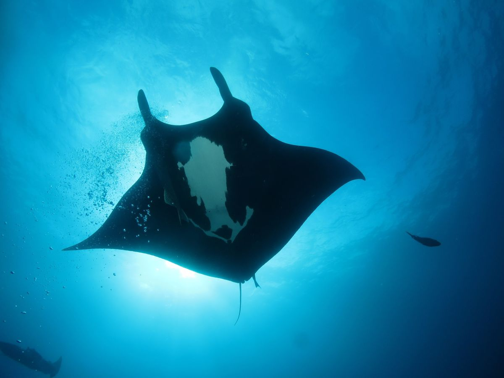

Otros
Los tiburones son animales pertenecientes a una familia de peces que están formados por esqueletos de cartílago, un tejido bastante flexible y con menor peso que un hueso. Logran respirar a través de una serie de membranas que se ubican a ambos lados de su cuerpo y como cualquier otro pez respiran bajo el agua a través de sus agallas.

El cuerpo plano de la mantarraya le permite asentarse en el fondo del océano, río o lago, camuflándose ante los depredadores que nadan arriba mientras caza a su presa en el fondo. Sus ojos están colocados en la parte superior de su cuerpo, mientras que su boca está en la parte inferior. Las mantarrayas tienen colas que a menudo tienen una púa dentada llena de toxinas. Si una mantarraya se siente amenazada, puede levantar su cola con púas y herir a posibles depredadores.
